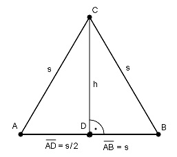

Pythagoras Aufgabe 21 Ein gleichseitiges Dreieck hat einen Umfang von 60 cm. Wie groß ist seine Fläche A in cm²?  Im gleichseitigen Dreieck halbiert die Höhe die Grundseite. U = 3 * s | :3 U 60 cm s = --- = ------- = 20 cm 3 3 Satz von Pythagoras im Dreieck ADC: AC² = AD² + h² | -AD² h² = AC² - AD² h² = 20² cm² - 10² cm² = 300 cm² |√ h = = 17,3 cm AB * h 20 cm * 17,3 cm A = -------- = ----------------- = 173 cm² 2 2